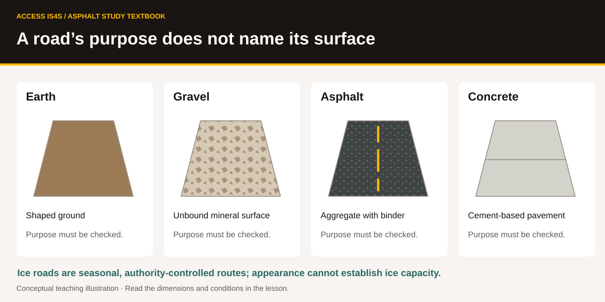
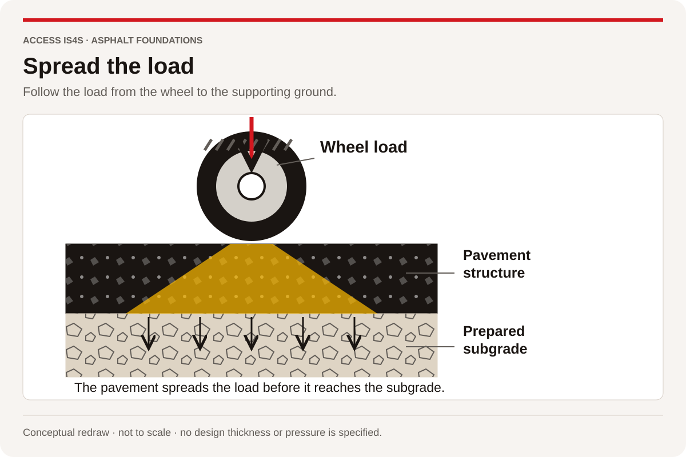

1 · The industry and its work
A1 · Introduction to the paving industry and paving equipment
Read the trade words, use them in a clear explanation, then keep evidence of your own work.
| Outline learning task | Practise here |
|---|---|
| A1.1–A1.5, A1.7 · Industry, equipment, resources, purposes and road types | “Build the material story” through “Give a complete first explanation”; Chapters 2–3 |
| A1.6 · Demonstrate understanding of relevant statistics | “Report what the data can support” through “Retrieve and preserve a source record” |
| A1.8 · Review relevant regulations and funding | “Match a question to a document” through “Check the funding statement” |
| A1.9 · Discuss environmentally friendly | “Make the strongest supported comparison” through “Revise a claim when the scope changes” |
Start with the purpose of the road
An asphalt paving/laydown technician helps turn a prepared site and a specified mixture into a pavement that serves its intended use. The work connects materials, machines, people and records. Infrastructure means the systems that support daily activity: roads are part of that network, alongside services such as drainage and utilities. A road can carry a delivery, support trade, provide access to school or health care, or serve recreation. The same route may serve several purposes.
The person using the finished road sees the surface. The crew also needs to understand what supports it. A suitable foundation, drainage, appropriate materials and verified construction all contribute to performance. A dark, smooth surface alone cannot tell you whether those conditions were met.
Cedar Learning Access, fictional case. A learning centre needs an access route that will serve people arriving on foot and in vehicles. The owner has appointed a designer and contractor. Before work starts, the crew needs current drawings, an agreed scope, a traffic and public-access arrangement, suitable equipment and a clear safety orientation. A neighbour's request about an entrance matters, but the crew must refer a proposed design change through the authorized project process. Listening and recording the concern helps the right person respond.
Follow the material and the information
Aggregate is mineral material such as sand, gravel or crushed stone. A pit is a source associated with excavating deposits such as sand and gravel; a quarry typically supplies rock that is extracted and processed. Crushing reduces particle size; screening separates material by size. Suitable material comes from an approved supply and must meet the project requirements. Finding nearby stone does not establish its suitability, extraction permission or environmental approval.
B.C. has varied landscapes and resource locations. Transport distance, the approved grading and properties of the aggregate, access and supply consistency affect a project. The crew uses the specified source and delivery records. A local material can be useful, but “local” is not a quality test. Equally, a long haul can change scheduling and logistics without changing the required product.
Asphalt binder, also called asphalt cement in the handbook, holds mineral particles together in an asphalt mixture. It is different from Portland cement, which is used in concrete. A plant proportions and processes the required materials. A haul vehicle brings the mixture to the paving operation. The paver receives and moves the mixture; its screed contributes to shaping the mat. Rollers compact the placed material, and the work is checked through the required inspection and testing process.
The information travels with the material. A delivery ticket identifies a load; a drawing identifies where the work belongs; a specification defines requirements; a test record reports an observation under a stated method. These records answer different questions. A ticket's mass cannot, by itself, prove the thickness or density achieved in the road.
Build the material story
Draw five connected stages: source, production, delivery, placement and compaction/checking. At each stage, add one material or machine term, one purpose and one record or question. Explain the route to a partner using aggregate, binder, paver, screed and compaction. Your partner points to the stage being described, then you swap. Each learner keeps an independently labelled map. Skills: Reading, Communication, Collaboration, Creativity and Innovation.
Name the equipment by what it does
| Equipment or component | Main function in this introduction | A distinction to remember |
|---|---|---|
| Crusher and screen | Reduce and separate aggregate sizes in an appropriate processing operation | Processing equipment does not establish that the product meets a specification. |
| Asphalt plant | Produce the specified mixture through the applicable production arrangement | Batch and continuous processes differ; Chapter 3 follows both. |
| Haul truck | Transport material and support controlled delivery | A load ticket is a record, not a placement test. |
| Paver tractor | Provide propulsion, power and material-handling functions | The tractor and screed are the two main sections shown below. |
| Hopper and conveyors | Receive mixture and move it rearward through the paver | The conveying mechanism has moving parts and hazardous energy. |
| Augers | Distribute mixture across the working width ahead of the screed | Their motion differs from the rearward conveyor route. |
| Screed | Shape the mat as part of the paving system | It responds to several interacting factors; it is not a fixed-depth stamp. |
| Roller | Compact material through the applicable procedure | A smooth appearance or a pass count alone does not prove density. |
| Rake, lute and other hand tools | Support appropriate spreading, shaping and finishing tasks | Similar-looking tools have different heads, functions and limits. |
FIGURE T02
Two main sections of the paver

Look and explain. Locate the screed in the manufacturer picture. Then locate the tractor. Explain how a machine can have one section that moves and handles material and another that contributes to shaping the mat. These are functional categories; an actual machine may have additional systems and different controls.
FIGURE T03
Name the parts of the handwork kit

A lute commonly has a broad head used in asphalt handwork. A rake has teeth suited to its intended material-handling task. Product terminology and head arrangements vary. Use the actual product description and instructions to distinguish a toothed head, a straight edge, a brace and a handle connection. A shovel has a blade and shaft, often with a grip; a wheelbarrow has a tray, handles, frame, wheel arrangement and supports. Loose connections, damaged handles, sharp damage or an unsuitable load can change the risk even when the tool looks familiar.
FIGURE T04
Match the drawing to real tools

Connect a part to a purpose
Identify tractor and screed in the CAT image. On the hand-tool diagram, identify a lute head, brace and handle; a rake's teeth; a shovel blade; and a wheelbarrow frame and wheel. Compare one diagram with the manufacturer's catalogue photograph. Record one feature that agrees and one feature that must be checked on the actual tool. Write a short defect report for the fictional observation “the rake head moves at its handle connection.” Describe what you observed and who should assess it before use; do not invent a repair. Skills: Reading, Writing, Problem Solving.
Roads have different surfaces and purposes
An earth road uses the ground surface, which may be shaped or improved. A gravel road has an unbound mineral surface. Asphalt pavement uses an asphalt-bound surface; concrete pavement uses a cement-based material. Supporting layers and drainage vary with the design. An ice road is a seasonal route whose opening, loading and use require the relevant authority's controls. A photograph does not establish safe ice capacity or permission to travel.
FIGURE T05
A road’s purpose does not name its surface

A resource road describes an access context, often connected with resource activity; it does not name one surface. A logging road describes a use. A corduroy road describes a construction form using logs laid across the direction of travel. Those three terms are not interchangeable. Chapter 2 develops the history and the evidence for different methods.
Classify carefully
For each phrase, identify whether it primarily describes material/surface, construction method or use: gravel road; logging road; corduroy road; concrete pavement; recreational access; seasonal ice road. Some phrases carry more than one kind of information—explain your choice. Then write three ways a road can support a community and two questions about effects on people, land or water that would need project-specific discussion. Keep personal or community-held knowledge private unless its sharing is agreed. Skills: Reading, Writing, Problem Solving.
Explain why the foundation matters
A pavement carries loads through its structure to the prepared ground. The layers work as a system. Their materials, thicknesses and condition influence how the system responds. The illustration below shows a qualitative idea: the region carrying the load becomes wider through the pavement structure. It is not a pressure calculation or a design method.
FIGURE T06
Spread the load

Give a complete first explanation
Prepare a one-minute explanation for a new classmate: what asphalt paving is, why roads matter, how aggregate and binder reach the road, which equipment functions you can now identify, and why supporting layers need attention. Include one thing the pictures cannot establish about an actual job. Ask the listener to restate your explanation; revise a sentence that was unclear. Save and reopen a typed or recorded version on a device, with permission before recording another person. Skills: Communication, Adaptability, Digital.
Read a number with its label
A statement about an industry needs a measure, geography and period. A count of people employed is different from a count of employers. A forecast of openings over ten years is different from the number employed in one year. Construction includes building work and civil engineering as well as paving. A broad construction figure provides context; it cannot be renamed an asphalt-paving total.
Evidence card I1 · B.C. construction. WorkBC's Construction industry profile, retrieved 29 October 2026, reports the following. The 2024 values are attributed on the page to the Labour Force Survey. The openings forecast is attributed to the B.C. Labour Market Outlook.
| Measure | Period | Reported value | Population or scope |
|---|---|---|---|
| Employment | 2024 | 246,750 | B.C. construction industry |
| Full-time share | 2024 | 92% | People employed in B.C. construction |
| Part-time share | 2024 | 8% | People employed in B.C. construction |
| Full-time share | 2024 | 80% | People employed across B.C. industries |
| Part-time share | 2024 | 20% | People employed across B.C. industries |
| Forecast job openings | 2025–2035 | 87,280 | B.C. construction industry |
The public page does not supply an asphalt-specific employer count in this extract. Shares are published rounded values; multiplying them by an employment total produces an approximation, not a newly observed headcount. Forecasts describe expected demand under assumptions and do not guarantee a job or a person's hours.
Evidence card I1b · Road-industry business locations. Statistics Canada's table 33-10-1095-01, Canadian Business Counts, with employees, December 2025, released 13 February 2026, reports 427 active statistical locations with employees in B.C. under NAICS 237310, Highway, street and bridge construction. This is a closer road-industry classification than all construction, but it includes more than asphalt paving. A company with several statistical locations can be counted several times. Locations are not a count of unique employers, people or projects.
| Employment-size category | Reported B.C. statistical locations |
|---|---|
| 1–4 employees | 175 |
| 5–9 employees | 63 |
| 10–19 employees | 72 |
| 20–49 employees | 62 |
| 50–99 employees | 32 |
| 100–199 employees | 18 |
| 200–499 employees | 4 |
| 500 or more employees | 1 |
| Total with employees | 427 |
The table's notes explicitly say not to use the size ranges to calculate total employment, and advise against using these counts as a time series because methodological changes can affect differences. The retained machine record has reference-period code 2025-07; the publisher labels the semi-annual table December 2025. Keep both in a source record rather than silently rewriting the downloaded field.
Worked example. The difference between the construction full-time share and the all-industry share is 92% − 80% = 12 percentage points. It is not a 12% increase in employment. An approximate construction part-time count would be 246,750 × 0.08 = 19,740 people, using a rounded share. A careful sentence keeps the word approximately and the 2024 construction scope.
Report what the data can support
Write a four-sentence industry note using I1: one employment statement; the full-time-share comparison; one forecast statement; and one limitation. Correct this claim: “There are 246,750 asphalt employers in B.C. and 87,280 guaranteed new paving jobs.” Then use I1b to check the sum of the eight size categories, find the difference between the 1–4 and 5–9 categories, and find the 1–4 category's share of all 427 locations to two decimal places. Explain why neither adding category midpoints nor subtracting 427 from 246,750 gives a valid workforce result. Mark the publisher, period, measure and scope beside each number. Skills: Reading, Numeracy, Writing.
Retrieve and preserve a source record
Using the public WorkBC link in the research record, locate one I1 value on a device. Record the page title, publisher, address, access date, measure and reporting year. Compare it with I1; a changed page does not make the retained dated extract disappear. Save and reopen your note. If access is unavailable, use the printed card for reading and schedule a later digital turn. Skills: Digital, Reading, Adaptability.
Separate law, contract information and funding
Evidence card I2 · Workplace orientation. B.C.'s Occupational Health and Safety Regulation, sections 3.22–3.25, defines a new worker to include someone new to a workplace and people affected by changed workplace hazards. Section 3.23 requires the employer to provide workplace-specific health and safety orientation and training before a young or new worker begins work. Topics include supervisor contact information, rights and responsibilities, hazards, emergency procedures, and instruction and demonstration of the work task. Section 3.24 addresses additional training when observation shows it is needed or when requested; section 3.25 requires records. This card identifies selected provisions; it is not the complete orientation.
Evidence card I3 · Highway specifications. B.C.'s Standard Specifications for Highway Construction page, updated 1 April 2026, describes the specifications as a standard reference in construction contracts. It identifies the 2025 edition as adopted 1 February 2025 and an amendments appendix updated 1 April 2026. The page says modifications for local conditions are specified in special provisions for each contract. A current public edition is a starting point: the signed contract, drawings, amendments and special provisions establish which requirements apply to a particular job. A specification reference is not automatically a statute.
Evidence card I3b · A defined abbreviation. The 2006 Design Build Standard Specifications for Highway Construction, clause 502.03.01, defines EPS as End Product Specification. In that clause, the contractor is responsible for construction-process quality control and the Ministry performs specified end-product audit sampling and testing for acceptance/rejection and payment adjustment. The definition is confirmed in PDF page 297, printed 1 of 22. That historical definition does not establish which edition governs a current contract, or prove the intended meaning of every unexplained use of EPS. In a geofoam discussion, EPS means expanded polystyrene; read the surrounding subject and definition.
Evidence card I4 · A completed project. The Kicking Horse Canyon Phase 4 project pages report completion on 31 July 2024. The project overview lists Government of Canada investment of $215.19 million and B.C. government investment of $385.58 million. The procurement page records the Province awarding the design-build contract to Kicking Horse Canyon Constructors on 6 November 2020. That team consisted of Aecon Group Inc., Parsons Inc. and Emil Anderson Construction. Funding is not the same as a contractor's profit or an individual worker's pay. The public summary is not the project's complete contract.
Match a question to a document
For each question, choose I2, I3, I3b, I4 or “additional document needed,” and explain the limit: What training does a new worker need before starting? Which specification edition governs a particular signed contract? Who are the two reported public funders? What is the contractor's profit? What does EPS mean in clause 502.03.01 of the 2006 specifications? What further context is needed to interpret EPS in an old note that gives no definition? Create a document register with title, issuer, date/version, status and question still open. Skills: Reading, Problem Solving, Writing.
Check the funding statement
Add the two I4 contributions and calculate the federal share of that sum to two decimal places. Explain why “more than $600 million” is consistent with the listed values. Rehearse a 45-second explanation distinguishing funder, contracting authority and contractor. Your partner checks the roles and units, then you swap. Skills: Numeracy, Communication, Collaboration.
Compare environmental claims within a boundary
Asphalt and concrete are pavement materials, not complete environmental outcomes. Compare a defined service, time period and system boundary. A material-production figure alone leaves transport, construction, maintenance, use and end-of-life outside the answer. A reusable material is not automatically the option with the lowest total impact. The amount recovered, replacement of new material, processing energy, transport and required performance all matter.
Evidence card I5 · Material recovery, a bounded comparison. The U.S. EPA's March 2004 Hot Mix Asphalt Plants chapter describes asphalt mixtures that may include reclaimed asphalt pavement, or RAP, alongside aggregate and asphalt cement. FHWA's undated historical Recycled Concrete Aggregate review describes concrete being recycled as aggregate, principally for base material in the review's U.S. context. These are two evidenced recovery pathways. Neither card provides a matched B.C. life-cycle emissions comparison, equal pavement designs, haul distances or a common service life. They support “both materials can enter recovery pathways,” not “either material is always greener.” The references describe mechanisms rather than current local market shares.
Practice decision brief, fictional. A community facility is considering two pavement options for the same 50 m by 6 m access route over a proposed 20-year comparison period. Both must meet the same approved function and loading requirements, which a qualified designer would establish. Option A proposes asphalt with some RAP; Option B proposes concrete with some recycled aggregate. The proposer supplies no verified quantities, maintenance plan, emissions factors or transport distances. The group must decide whether a claim of “30% lower whole-life emissions” has been established. No numerical environmental advantage is supplied as fact.
Make the strongest supported comparison
Create a comparison grid with material production, transport, construction, maintenance/use and end-of-life rows. For each option, distinguish the recovery pathway supported by I5 from information missing in the fictional brief. Write a conclusion of 60–90 words. Include the common function, 20-year proposed period, one supported similarity and at least three data needs. Skills: Reading, Problem Solving, Writing.
Revise a claim when the scope changes
A proposer now says the “30%” applies only to factory production per tonne and compares different product quantities. Explain why that does not answer the whole-route, 20-year question. In pairs, redesign the comparison request so the next submission could be evaluated. Each learner records one contribution and one revised sentence. Skills: Numeracy, Collaboration, Adaptability, Creativity and Innovation.
Keep your industry note, source record, document register, funding calculation and comparison request. An instructor checks the evidence and the questions you leave open, not whether you force a confident answer from incomplete information.